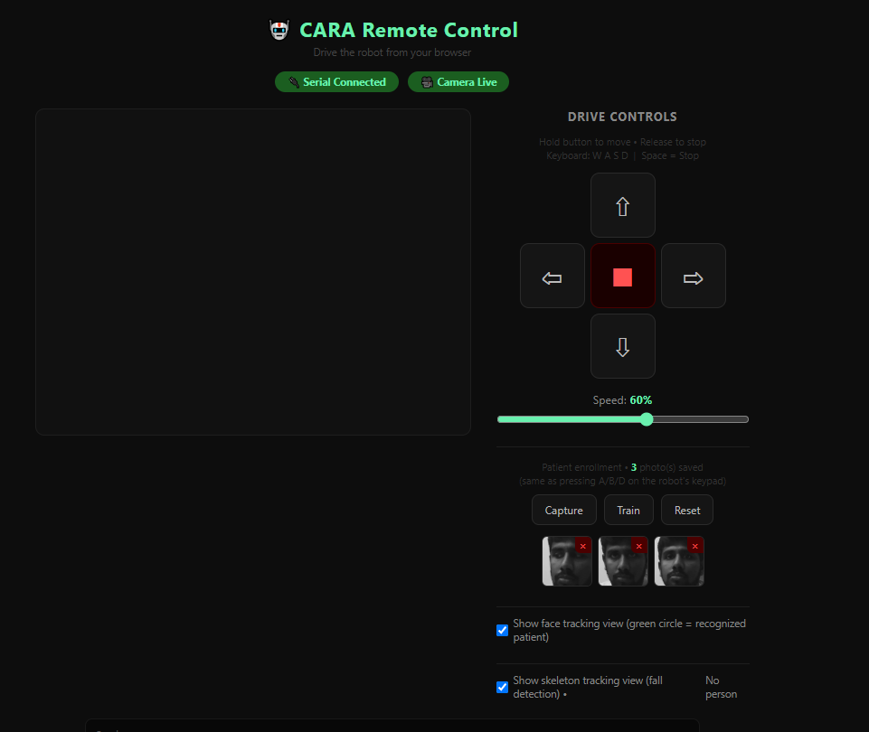

ip_display_lcd.py — the Jetson-Side IP Display, For Real This Week
Week 10 left this as notes only. This week it became a working script: a 16×2 I2C LCD wired straight to the Jetson's 40-pin header — no Arduino involved at all — cycling through every live network interface's IP (and the real Wi-Fi SSID where relevant) every few seconds. It's meant to run automatically at boot via systemd, so the IP is visible immediately without needing to already be connected remotely — solving the chicken-and-egg problem of needing the IP to connect, but needing to connect to see it.
Building it for real surfaced exactly why Week 10 flagged the I2C bus as a guess rather than a fact: the candidate was /dev/i2c-7, and live testing confirmed that guess correct — bus 7, address 0x27, clean single-device read via i2cdetect -y -r 7. Two other rough edges got fixed once it was actually running: the first SSID-lookup method (nmcli dev wifi) occasionally triggered a real background scan and stalled the display loop for up to ~12 seconds, so iwgetid -r (reads the kernel's current association directly, never scans) is now tried first, with nmcli only as a fallback. A docker0/veth/virtual-interface filter that Week 10's notes described was also actually wired up in the real code this time.
Also worth knowing: if LCD characters look faint or incomplete (a classic symptom is the vertical stroke of a "T" not showing), that's a contrast problem, not a backlight problem — there's no software control for it on a standard PCF8574 backpack. It's a physical trimmer potentiometer on the backpack board, adjusted by hand while the display is live.
Bench-Testing Driving From the Jetson — Without the Rest of the System
A new bare-minimum sketch, SixteenthTest_JetsonDirectControl, strips motor control down to just that — no ultrasonic gating, PIR, LCD, RFID, keypad, servo, buzzer, or RTC — so driving via remote_control.py can be bench-tested in isolation from everything else. It understands the same serial vocabulary the web UI already sends (MOVE_FORWARD, MOVE_BACKWARD, TURN_LEFT, TURN_RIGHT, STOP, SET_SPEED:<0-255>), so no Jetson-side changes were needed to drive it. Per the standing rule, cara_main_mega.ino itself was left untouched — this is a separate bring-up sketch.
Motion is ramped rather than instant — PWM steps toward the target speed gradually, and a direction reversal ramps down to a stop first before ramping up the other way, instead of flipping the H-bridge polarity while still moving. Adding LCD output to this same sketch was tried and reverted: enabling it made the board hang completely on boot, with no serial output at all. That points to a real I2C bus problem — most likely the LCD not actually being powered on this rig, since an unpowered bus with no pull-ups can make the AVR's blocking Wire calls hang forever — not a code bug. Restoring it needs the physical connection checked first.
A Speed Slider Lands in the Web UI
To go with the new direct-control sketch, remote_control.py's web interface got a speed slider (0–100%), debounced so dragging it doesn't flood the serial link with a new SET_SPEED command on every pixel of movement. The percentage maps to a 0–255 PWM value sent to the Arduino. Worth noting honestly: at very low percentages the motors may just buzz without actually turning — that's the same motor-torque limitation flagged back in Week 09, not a bug in the new slider.

remote_control.py web UI's current state — drive controls and the new speed slider at 60%, alongside the patient enrollment panel (Capture / Train / Reset) with three photos already saved.Combined Test: RFID + LCD + Buzzer (17th Test)
SeventeenthTest_LCD_RFID_Buzzer brings the newly-fixed RFID and LCD together in one sketch: the LCD shows "Ready – tap tag" by default, and tapping a tag shows its UID plus an accepted/rejected result, with the same buzzer accept/reject pattern as TwelfthTest_RFIDAccessControl and Week 10's KnownTags.md UID list. The LCD returns to the ready message automatically after a few seconds. It runs on the same bit-banged driver (SDA=20, SCL=A0) introduced in Week 10 to work around the damaged hardware SCL pin.
cara_main_jetson.ino — Real Firmware, and a Safety Bug Caught Live
Everything bench-tested this week (ramped/speed-controllable motors from the Sixteenth test, the bit-banged LCD from the Seventeenth test) came together into a real new sketch, cara_main_jetson.ino — again a new file, with cara_main_mega.ino itself left untouched per the standing rule. Building it surfaced two pre-existing bugs in cara_main_mega.ino that stop it compiling on this toolchain at all — an IDLE/keypad name collision and an lcd.begin() argument mismatch — confirmed unrelated to anything done this session, just found along the way. Obstacle avoidance was adapted from that same file's ultrasonic logic (fixed, not copied broken), and the LCD now flashes CMD RECEIVED: on every command and BLOCKED! on a refused one — enough to tell "reached the Arduino but didn't move" apart from "never reached the Arduino" at a glance. The Sixteenth test's L/R motor polarity also turned out to be backwards from cara_main_mega.ino's documented pattern — caught and fixed via real driving tests, not assumed correct.
Safety fix, found live: STOP was only zeroing target speed, not target direction. A real incident during testing showed why that matters — after a STOP, the last direction was still "remembered," so a later, unrelated SET_SPEED (even just nudging the web UI's speed slider) could silently re-arm movement in that stale direction with no MOVE_* command anywhere nearby. Root-caused from live journalctl logs, not guessed — STOP now resets both.
remote_control.py: Closing the Debug Loop, Fixing a Real Threading Bug
_send() now reads back the Arduino's actual OK:/BLOCKED:/IGNORED response instead of just logging "sent X" — journalctl -u cara-remote-control -f now shows the full round trip, not just the outbound half. Building that surfaced a real concurrency bug: two Flask request threads could read the same serial stream at once, each waiting on a response line the other had already consumed — reproduced live as a genuine 120+ second hung request, not a hypothetical. Fixed by wrapping all serial access in a lock. Separately, the systemd service now sets PYTHONUNBUFFERED=1 — Python fully buffers stdout when it isn't attached to a TTY, which is what was silently delaying print() output in the logs; that one line is what makes "live log" actually live.
ROS2 Nodes Get Real: Bridge, Motion Controller, and Fall Detection
Three cara_jetson nodes moved from placeholder to real logic this week, each tested as far as possible without disrupting active teleoperation:
arduino_bridge_node— intended to become the sole owner of the serial port going forward.remote_control.pyis not yet rewired to use it and still writes serial directly, so the two must not run against/dev/ttyACM0at the same time. Built with this week's concurrency lesson baked in from the start — a short 50ms read timeout so the read loop can't starve command writes of the lock.motion_controller_node— arbitrates a face/band tracking target into a drive command.autonomous_enableddefaults toFalse(dry-run: logs decisions, never publishes) — deliberately, since no patient is enrolled yet, no wristband exists yet,remote_control.pyisn't ROS2-integrated (so it has no way to yield to a human driver), and theSTOPbug above was found the same day. All four decision branches (TURN_LEFT/MOVE_FORWARD/MOVE_BACKWARD/STOP) were verified live via manual topic publishes.fall_detection_node— real logic at last, correctly wrappingfall_detection.py'sFallTracker/get_body_signals/get_fall_confidence/load_classifier. It publishesFALL_DETECTEDstraight to/cara/drive_cmd, not gated behindautonomous_enabled— a real fall should always reach the Arduino. Import-verified against the real module; live camera testing is blocked for now by the camera device already being in use elsewhere (same busy-device constraint as the serial port).
Patient Enrollment Goes Keypad + Mobile — No Desktop GUI Needed
An explicit requirement — enrollment must not need a monitor, mouse, and keyboard sitting at the Jetson — landed this week with two equivalent trigger paths that both land on the same code: the physical keypad (A = capture, B = train, D = reset — deliberately not C, since the keypad's 7/8/9/C row is a known-dead row confirmed during earlier hardware testing) and matching buttons in the mobile web UI.
The keypad path runs through the firmware: cara_main_jetson.ino reports A/B/D as ENROLL:CAPTURE/TRAIN/RESET over serial, which remote_control.py's background serial reader picks up and routes into the exact same capture/train/reset functions the web buttons call directly. Every keypress also flashes a confirmation on the robot's own LCD (e.g. "ENROLL: Capture"), reusing the same flash-message mechanism already built for drive commands. Both paths write to the same patient_data/ directory — raw_photos/ and a trained patient_model.yml — that person_tracker_node reads from, regardless of which path enrollment happened through. A new PERSON_TRACKING_AND_FALL_DETECTION_WORKFLOW.md documents the full enroll → track → fall-detect pipeline end to end.
Known manual step: person_tracker_node only loads the recognition model at startup — after training a new one, it currently needs a restart to pick it up. Not automatic yet.
Fall Detection Now Gated to the Tracking Lock
fall_detection_node now subscribes to person_tracker_node's lock state (FACE/BAND/LOST) and only runs MediaPipe pose detection while actually locked onto the patient. While LOST, it publishes "No target" and skips pose detection entirely, instead of flagging a fall for whoever happens to be in frame regardless of who's being tracked — both a safety fix and a CPU saving, since MediaPipe never runs on frames that weren't trustworthy anyway.
Two distinct, deliberately different statuses come out of this: "No target" means not locked onto the patient right now, so detection was deliberately skipped; "No person" means the node was locked and looked, but MediaPipe just didn't find a pose in that frame. Still open: while BAND-locked (face/pose struggling), the patient's body isn't guaranteed to be well-framed for pose estimation either — locking via the band doesn't guarantee a usable skeleton, and that's not solved yet.
Web UI Gets a Photo Gallery and a Live Face-Tracking View
The enrollment buttons now sit above a thumbnail grid of captured photos, each with its own delete (×), refreshing after every capture/train/reset and on a timer. The new /enroll/photos and /enroll/photo/<name> endpoints validate filenames against what's actually on disk rather than trusting the URL segment, so a crafted filename can't path-traverse out of the photos directory.
A new checkbox toggles the main camera view between the plain feed and /tracking_feed, which draws a circle around any detected face — green if the LBPH model recognizes the patient, orange otherwise. It's built natively into remote_control.py, reusing the same frame buffer the rest of the UI already holds, rather than standing up a second ROS2 camera_node that would just hit the same "device busy" conflict enrollment already sidesteps. The recognizer itself reloads whenever patient_model.yml's modified time changes, so retraining from the gallery's Train button takes effect on the very next frame — no restart needed here, unlike person_tracker_node's own model load, which still only happens at startup. The video generator only runs while a browser actually has the tracking view open, so leaving the checkbox off costs zero extra Haar/LBPH work.
A first version of this made the face-tracking and skeleton/fall-detection overlays mutually exclusive — a design choice made without asking — and was corrected to draw both on the same frame once asked why.
Keypad Alert Control: # to Panic, * to Silence
The keypad's # and * keys — unused in cara_main_jetson.ino until now — are wired to the alert system: # triggers a manual panic alert, identical to a real FALL_DETECTED, and * acknowledges and silences it. This matches cara_main_mega.ino's original intended behavior for those two keys, which the buzzer previously had no way to be silenced without a serial RESET or waiting out the 30-second timeout. The shared logic was refactored into triggerAlert()/clearAlert() so the serial (FALL_DETECTED/RESET) and keypad (#/*) paths can't drift apart from each other over time.
First Full Autonomous Pipeline Test — Live, End to End
The whole chain — camera_node → person_tracker_node → motion_controller_node → arduino_bridge_node → the real Arduino — ran live for the first time this week, confirmed working end to end: STOP commands correctly published, relayed, and executed, matching what the Arduino itself reported back. Getting there took a real bug fix: motion_controller_node's rate-limit check compared "now" against a timestamp it had just set to "now" two lines above, so it was always true — drive decisions were being computed correctly but never actually reaching publish() while autonomous_enabled was on. Found because the node logged nothing past its own startup line on the first live attempt; fixed by removing the redundant check and relying on the existing "same command within 2s" dedup as the rate limit. Turning left or right now always arms at full speed (SET_SPEED:255, sent once when autonomous mode engages) rather than depending on whatever speed happened to be left over from earlier teleop testing.
A new debug_viewer_node — a lightweight standalone MJPEG server — lets a phone watch any ROS2 debug-image topic live without needing the full remote_control.py web UI (which can't run alongside camera_node anyway, the same device-conflict class as everywhere else this week). It now overlays the live drive decision and the Arduino's actual reported direction/speed directly on the video, so one view answers both "is it seeing me" and "what is it telling the robot to do" — added after debugging blind via terminal logs alone turned out to be impractical.
Separately, the long-dead bug in remote_control.py's own background fall-detection thread — a wrong import path and function names that don't exist in fall_detection.py, silently failing every session — is now actually fixed, confirmed via a live CPU increase and a working /skeleton_status endpoint. And enrollment got its first real trial: 11 real photos captured, the LBPH model trained, and a 232/232 clean FACE lock over a 20-second window facing the camera directly. One limitation surfaced doing that: recognition is sensitive to pose angle — looking down at a phone instead of at the camera can drop the match even against the same trained model.
Turn Speed Made Proportional — Fixing Overshoot and Jitter
Live testing of the always-full-speed (255) turn from earlier this week found visible overshoot and jitter: by the time a new camera-frame decision arrived, a full-speed turn had already swung well past the deadzone, so the next tick would see itself off-center on the other side and turn hard back the other way — that oscillation was the jitter. The fix makes turn speed scale linearly with how far outside the deadzone the target is: MIN_TURN_SPEED (150) right at the deadzone edge, ramping up to MAX_TURN_SPEED (255) only near the frame edge, so it decelerates naturally approaching center instead of slamming to a stop past it. Verified with unit tests on the speed function's boundary conditions (deadzone edge → exactly MIN, frame edge → exactly MAX, clamped beyond that) and a dry-run of the full decision pipeline across near/far off-center positions before committing.
Noted honestly in the code: the DC 6V DIY motors have no encoder feedback, which puts a real hardware ceiling on how far this can go — this is a mitigation, not a complete fix. Better motors or encoders would be the fundamental answer, not something software alone can fully solve.
LCD Goes Dark Again — Root-Caused to Power, Not Wiring or Code
A long investigation this week chased why the Arduino's LCD suddenly showed nothing. A real isConnected() diagnostic was added — checking the actual I2C ACK bit, which the bit-banged driver already computed but had never checked anywhere, so begin()/print() previously reported no error whether or not an LCD was actually present and responding. With that in place, two separate tests both came back LCD: NO ACK at 0x27 — nothing responding on the bus at all. Checking the backlight and the I2C backpack's power LED narrowed it further: initially fully dark (pointing at VCC/GND wiring), then after reseating connections both were confirmed on, but the display stayed dim with no visible characters — the classic contrast-trimmer symptom from Week 10, not power or wiring after all.
The decisive test: the same LCDCheck_RotatingContent.ino uploaded directly from a laptop, with the Arduino completely disconnected from the Jetson — and it worked correctly, real text visible. That rules out the LCD hardware, its wiring, the bit-banged driver, and the sketch itself, all at once. The problem is specific to the Jetson-connected power setup. Leading theory: a buck/boost converter in the external power path has failed or gone unstable — laptop USB bypasses it entirely and works, while every Jetson-connected test so far had external power in the chain too, with both sources active at once (itself worth avoiding as a test variable going forward — test power sources one at a time, not together). Not yet resolved; next step is physically checking the wiring and the converter's actual output voltage with a multimeter.
A Near-Incident, Caught in Time
A routine git sync merged in EighteenthTest_MotorDriverWASD.ino — a new single-keystroke WASD/± motor test sketch built elsewhere — cleanly, no conflicts. After reconnecting the Arduino following the laptop-side LCD test above, the board still had whatever was last flashed to it, likely that same WASD sketch. It reacts to single characters immediately, with no full-word matching — which meant remote_control.py's own command strings contain accidental trigger letters: "FALL_DETECTED" contains both 'A' and 'D', which that sketch read as TURN_LEFT then TURN_RIGHT. The log confirmed a real FALL_DETECTED had already been sent moments before this was caught.
Caught and corrected: cara_main_jetson.ino was re-flashed immediately, with a clean boot (DIR:STOPPED SPD:0) and correct word-based command handling (OK:STOP for a real STOP) verified before resuming. Lesson for next time: after any laptop-side upload to the shared Arduino, explicitly reflash the real firmware before reconnecting to the Jetson — don't assume the board still has what you last built for it.
Obstacle-Detection Idea: Discussed, Not Built Yet
A proposal to decompose the 45°-diagonal corner sensors (FL/FR/BL/BR) into front/side components via distance × sin(45°) / distance × cos(45°) got talked through before any code was written. Since sin(45°) = cos(45°), a single corner sensor's decomposition always produces two equal numbers — on its own, it can't distinguish "a wall dead ahead" from "a nearby side wall," so it doesn't add new information in isolation from the existing front-wall/narrow-pocket ambiguity flagged earlier in the project.
Where it would genuinely help: cross-referencing each corner's decomposed component against the true L/R sensors — if FR's side-component roughly matches what R independently reports, that's real evidence FR is just seeing the same side wall, not a front obstacle. That's a legitimate sensor-fusion improvement over today's flat "is FL or FR close?" check, just not implemented yet — parked for a later session. Also worth noting: this idea wouldn't have explained the "robot isn't moving" report that prompted the question in the first place, since motion_controller_node's current TURN_LEFT/TURN_RIGHT-only logic only gates on the true L/R sensors, not the diagonal ones — that report is still undiagnosed going into next session.
What Did Not Go Well (So Far)
The LCD-on-SixteenthTest_JetsonDirectControl attempt hung the board outright and had to be reverted, rather than just failing gracefully. The wristband color used for the tracking fallback is still a placeholder (bright magenta/pink) — not tuned against an actual physical band, which itself hasn't been built yet. remote_control.py still writes directly to the Arduino's serial port instead of publishing to /cara/drive_cmd, which means the web UI's manual teleop and the ROS2 autonomous stack still can't run at the same time. The decision logic behind autonomous left/right centering is now proportional and unit-tested, but an actual "robot physically turned to recenter on a person" moment still hasn't been directly observed — first a wrong-firmware close call, then an unrelated "not moving" report that wasn't chased down before time ran out. The LCD power issue remains unresolved, pending a physical check of the wiring/converter. Two DAILY_LOG.md files now exist (repo root and experiments/) after a merge from elsewhere — not yet consolidated. Carried-over open items: the Arduino side of the original SET_IPS LCD-display idea from Week 10 still isn't implemented, the DS3231 RTC is still disabled on the damaged bus, and the drive motors' replacement status wasn't reconfirmed this week.
Week 11 Checklist (So Far)
| Jetson-side I2C LCD IP display working on real hardware (bus 7 confirmed) | ✓ Complete |
| Boot-time systemd service documented for the IP display | ✓ Complete |
| Bare-minimum Jetson-driven motor control sketch (Sixteenth test) | ✓ Complete |
| LCD on the direct-control sketch | ⏳ Reverted — bus hang, needs hardware check |
| Speed slider added to remote_control.py web UI | ✓ Complete |
| Combined RFID + LCD + buzzer test (Seventeenth test) | ✓ Complete |
| cara_main_jetson.ino built (motors + LCD + obstacle avoidance combined) | ✓ Complete |
| STOP safety bug (stale targetDir) found live and fixed | ✓ Complete |
| remote_control.py response readback + threading lock fix | ✓ Complete |
| arduino_bridge_node, motion_controller_node, fall_detection_node built | ✓ Complete |
| Keypad + mobile web patient enrollment (no desktop GUI) | ✓ Complete |
| Fall detection gated to person_tracker_node's lock state | ✓ Complete |
| PERSON_TRACKING_AND_FALL_DETECTION_WORKFLOW.md written | ✓ Complete |
| Web UI photo gallery (view/delete) + live tracking view toggle | ✓ Complete |
| Keypad #/* wired to panic alert / acknowledge | ✓ Complete |
| motion_controller_node rate-limit bug found live and fixed | ✓ Complete |
| Full autonomous pipeline verified live, end to end (camera → Arduino) | ✓ Complete |
| debug_viewer_node built (phone-viewable MJPEG + drive-decision overlay) | ✓ Complete |
| remote_control.py's own fall-detection import bug fixed for real | ✓ Complete |
| First real patient enrolled (11 photos, LBPH trained, 232/232 FACE lock) | ✓ Complete |
| Proportional turn speed (fixes overshoot/jitter), unit-tested | ✓ Complete |
| Real isConnected() I2C ACK diagnostic added to LCD code | ✓ Complete |
| LCD "goes dark" issue root-caused to power, not wiring/code/driver | ✓ Complete |
| Near-incident (stray WASD sketch) caught, correct firmware re-verified | ✓ Complete |
| Sensor-fusion obstacle-detection idea designed (diagonal decomposition) | ✓ Complete — design only |
| Physical wristband built | ⏳ In Progress |
| Wristband color tuned against a real physical band | ⏳ In Progress |
| person_tracker_node auto-reloads model after training (no restart) | ⏳ In Progress |
| remote_control.py migrated onto /cara/drive_cmd (ROS2 integration) | ⏳ In Progress |
| Physical "turned to recenter" moment directly observed and confirmed | ⏳ In Progress |
| Recognition robustness to pose angle | ⏳ In Progress |
| LCD power issue resolved (buck/boost converter suspected) | ⏳ In Progress |
| "Robot isn't moving" report diagnosed | ⏳ In Progress |
| Sensor-fusion obstacle-detection idea actually built | ⏳ In Progress |
| Two DAILY_LOG.md files (root + experiments/) consolidated | ⏳ In Progress |
| Arduino-side SET_IPS handling (Week 10's original LCD-display idea) | ⏳ In Progress |
| DS3231 RTC re-enabled on a working bus | ⏳ In Progress |